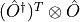

Quantum Simulations
QuanGuru.QuantumToolbox.evolution
Contains functions to create Unitary and open-system super-operators.
Unitary(Hamiltonian[, timeStep])
Unitary
Creates Unitary time evolution operator for a given Hamiltonian and time step t.
Liouvillian([Hamiltonian, …])
Liouvillian
Creates Liouvillian super-operator for a Hamiltonian and collapse operators (with corresponding decay rates ).
LiouvillianExp([Hamiltonian, timeStep, …])
LiouvillianExp
For a time step t, creates Liouvillian and exponentiate it, or unitary for a Hamiltonian .
dissipator(collapseOperator[, identity])
dissipator
Creates the Lindblad dissipator super-operator for a collapse operator .
_preSO(operator[, identity])
_preSO
Creates pre super-operator for an operator .
_posSO(operator[, identity])
_posSO
Creates pos super-operator for an operator .
_preposSO(operator)
_preposSO
Creates pre-pos super-operator  for an operator .
Keeps sparse/array as sparse/array.
Hamiltonian (Matrix) – Hamiltonian of the system
timeStep (float) – time used in the exponentiation (default=1.0)
Unitary time evolution operator
Matrix
Examples
>>> Unitary(2*np.pi*sigmaz(), 1).A array([[1.+2.4492936e-16j, 0.+0.0000000e+00j], [0.+0.0000000e+00j, 1.-2.4492936e-16j]])
Hamiltonian (Matrix or None) – Hamiltonian of the system
collapseOperators (list (of Matrix)) – list of collapse operator for Lindblad dissipator terms
decayRates` (list (of float)) – list of decay rates (if not given assumed to be 1)
Liouvillian super-operator
>>> Liouvillian(2*np.pi*sigmaz(), [2*np.pi*sigmaz()], [1]).A array([[ 0. +0.j , 0. +0.j , 0. +0.j , 0. +0.j ], [ 0. +0.j , -78.95683521+12.56637061j, 0. +0.j , 0. +0.j ], [ 0. +0.j , 0. +0.j , -78.95683521-12.56637061j, 0. +0.j ], [ 0. +0.j , 0. +0.j , 0. +0.j , 0. +0.j ]])
timeStep (float) – time used in the exponentiation (default=1)
decayRates (list (of float)) – list of decay rates (if not given assumed to be 1)
exp (bool) – boolean to exponentiate the Liouvillian or not (=True by default)
(exponentiated) Liouvillian super-operator
>>> LiouvillianExp(2*np.pi*sigmaz(), 1, [], []).A array([[1.+2.4492936e-16j, 0.+0.0000000e+00j], [0.+0.0000000e+00j, 1.-2.4492936e-16j]])
>>> LiouvillianExp(2*np.pi*sigmaz(), 1, [2*np.pi*sigmaz()], [1]).A array([[1.00000000e+00+0.00000000e+00j, 0.00000000e+00+0.00000000e+00j, 0.00000000e+00+0.00000000e+00j, 0.00000000e+00+0.00000000e+00j], [0.00000000e+00+0.00000000e+00j, 5.12250228e-35-2.50930241e-50j, 0.00000000e+00+0.00000000e+00j, 0.00000000e+00+0.00000000e+00j], [0.00000000e+00+0.00000000e+00j, 0.00000000e+00+0.00000000e+00j, 5.12250228e-35+2.50930241e-50j, 0.00000000e+00+0.00000000e+00j], [0.00000000e+00+0.00000000e+00j, 0.00000000e+00+0.00000000e+00j, 0.00000000e+00+0.00000000e+00j, 1.00000000e+00+0.00000000e+00j]])
collapseOperator (Matrix) – a collapse operator
identity (Matrix or None) – identity operator (exist for internal use and optimisation)
Lindblad dissipator
>>> dissipator(sigmaz()).A array([[ 0., 0., 0., 0.], [ 0., -2., 0., 0.], [ 0., 0., -2., 0.], [ 0., 0., 0., 0.]])
>>> dissipator(sigmam()).A array([[-1. , 0. , 0. , 0. ], [ 0. , -0.5, 0. , 0. ], [ 0. , 0. , -0.5, 0. ], [ 1. , 0. , 0. , 0. ]])
operator (Matrix) – a collapse operator
identity (Matrix or None) – identity operator (exist for internal use and optimisations)
pre super-operator
>>> evolution._preSO(sigmam()).A array([[0., 0., 0., 0.], [1., 0., 0., 0.], [0., 0., 0., 0.], [0., 0., 1., 0.]])
pos super-operator
>>> evolution._posSO(sigmam()).A array([[0., 0., 1., 0.], [0., 0., 0., 1.], [0., 0., 0., 0.], [0., 0., 0., 0.]])
Creates pre-pos super-operator for an operator .
sparse (bool) – boolean for sparse or not (array)
pre-pos super-operator
>>> evolution._preposSO(sigmam()).A array([[0, 0, 0, 0], [0, 0, 0, 0], [0, 0, 0, 0], [1, 0, 0, 0]], dtype=int64)
QuanGuru.QuantumToolbox.operators
QuanGuru.QuantumToolbox.functions